Arrêt 1 · Place de l'Indépendance
Dakar Dem Dikk
Réseau urbain : Dakar et sa banlieue, plus les navettes vers les gares du TER.
- 40 M
- voyageurs par an
- 4 M
- déplacements réguliers
Concept de refonte non officiel — projet portfolio. Site officiel : demdikk.sn
DAKAR → GUINGUINEO · 5000 F
Bus urbains, navettes vers l'aéroport, lignes vers toutes les régions et vers la sous-région. Un seul réseau public, depuis 2001.
LIGNE 01 · PARCELLES → LECLERC · 1ER DÉPART 05H30, DERNIER 20H30 · RETOUR 06H30 – 21H00 ◆ 7 NOUVEAUX ARRÊTS INTERURBAINS : MBIRKILANE · MALEM HODAR · NIORO DU RIP · KANEL · BOUNKILING · KOUMPENTOUM · MBACKÉ ◆ NOUVELLE DESTINATION DAKAR ⇄ GUINGUINEO · 5 000 F ◆ DAKAR → KIDIRA LUN · MER · SAM À 7H · 13 000 F ◆
À la une
Offres de transport
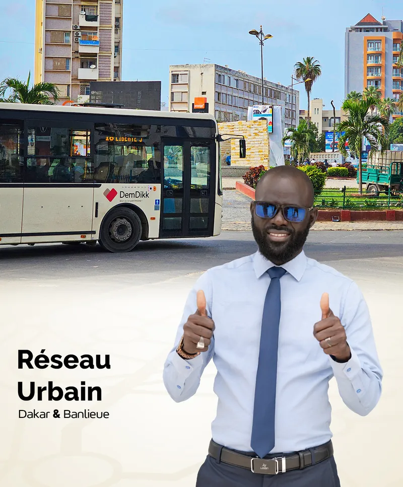
Dakar et sa banlieue, du premier départ à 5 h 30 au dernier bus du soir.
30 lignes →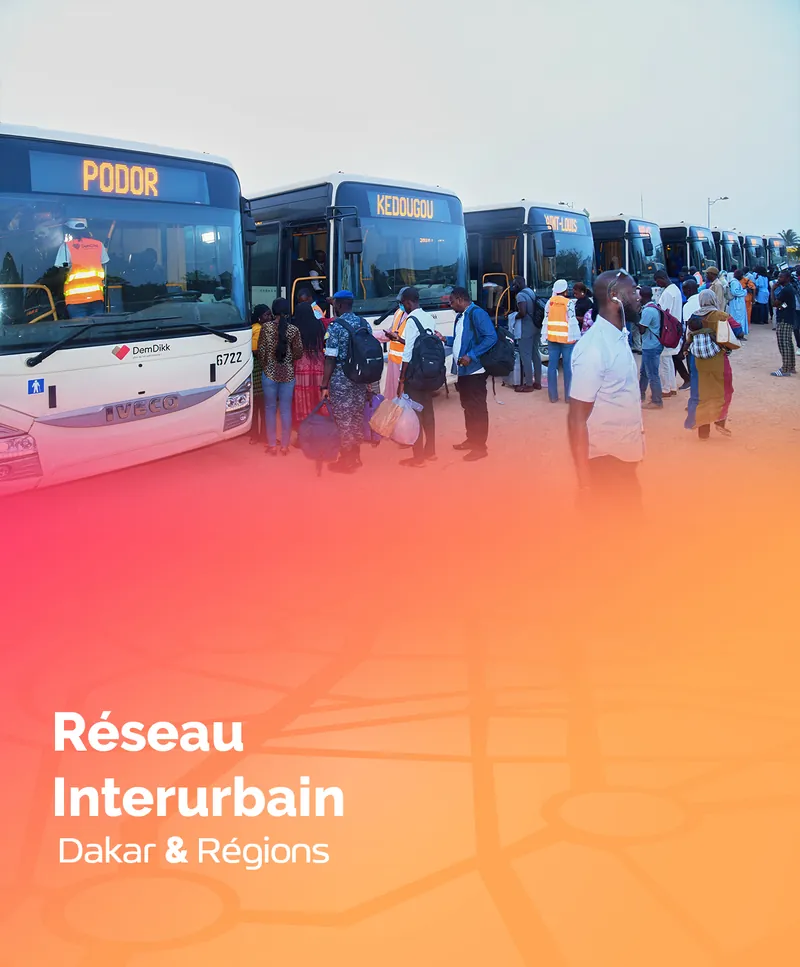
Toutes les régions du Sénégal à bord de bus connectés et confortables.
80 lignes →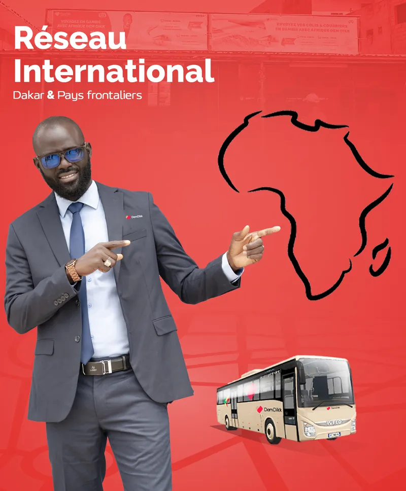
Les capitales de la sous-région dans des bus modernes et sécurisés.
Dakar → Banjul, 12 000 F →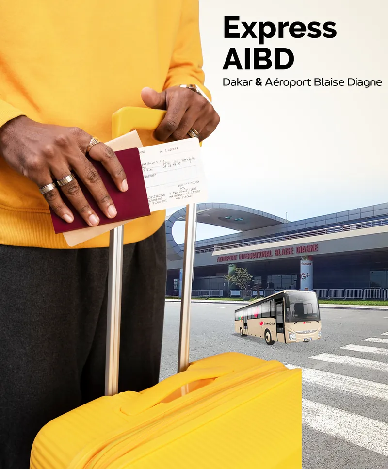
L'esprit Téranga dès votre arrivée, à bord de bus climatisés.
+221 78 184 58 23 →VOYAGE 3D · FAITES DÉFILER
Faites défiler : du Plateau à la Corniche, de Dieuppeul aux Parcelles, le bus s'arrête là où partent nos quatre réseaux.
Arrêt 1 · Place de l'Indépendance
Réseau urbain : Dakar et sa banlieue, plus les navettes vers les gares du TER.
Arrêt 2 · Corniche, Ouakam
Au pied du monument de la Renaissance, le TAF TAF part de Ouakam vers l'AIBD par l'autoroute à péage.
Arrêt 3 · Gare de Dieuppeul
Départs vers toutes les régions : Touba, Kaffrine, Tambacounda, Kidira… Réservation au 77 589 36 23.
Arrêt 4 · Terminus des Parcelles
Départ pour Banjul chaque jour à 7 h. Retour à 7 h 30 depuis Kanifing.
Info voyageurs
Services
Dem Dikk loue ses bus, transporte vos colis, affiche vos campagnes et répare des véhicules. Ouvrez un service pour voir le détail.
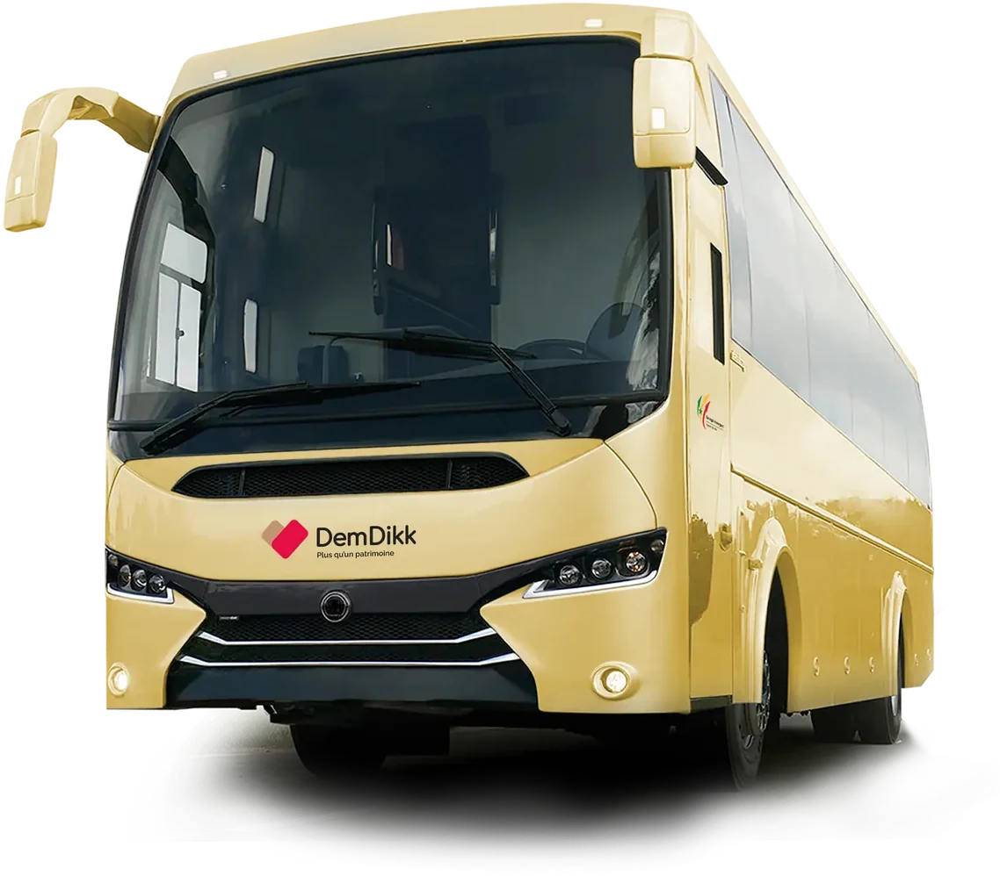
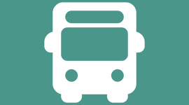
Location de bus avec chauffeurD'une journée à plusieurs semaines, d'une dizaine à plusieurs centaines de passagers, au Sénégal comme dans la sous-région. Une prestation sur mesure, adaptée à chaque budget.
Avec une carte d'abonnement, chacun se déplace facilement sur des réseaux interconnectés et multimodaux. Le parcours client continue au-delà du trajet.
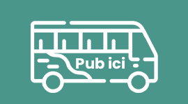
Régie publicitaireDiffusez votre campagne sur le réseau de bus Dem Dikk et sa régie digitale, présente partout au Sénégal.
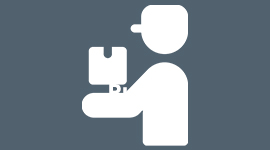
Messagerie : colis et courrierVos colis arrivent à destination en 24 h, dans toutes les régions, grâce au réseau Sénégal Dem Dikk.
Non acceptés : chèques, produits périssables, téléphones, tablettes et ordinateurs, gaz inflammable, armes et objets tranchants.
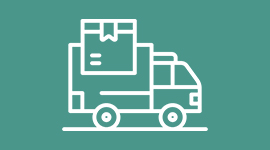
Transport de marchandisesFret routier sécurisé sur tout le territoire national et à l'international, en sec comme en froid (Cold & Dry).
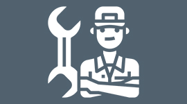
Prestations mécaniquesLe plateau technique de Dakar Dem Dikk entretient et répare aussi les véhicules d'autres flottes.
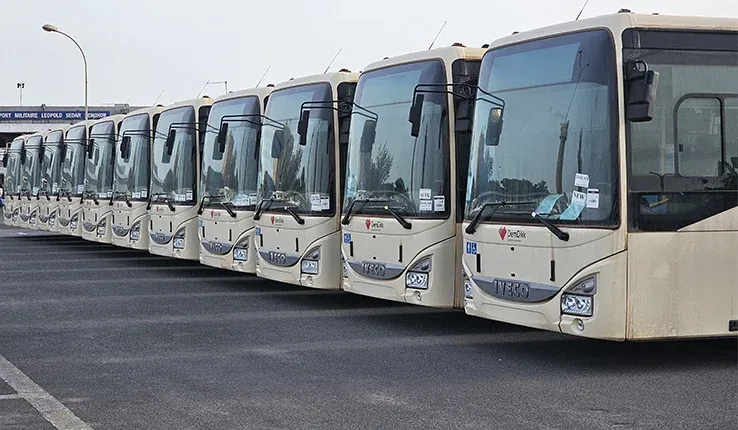
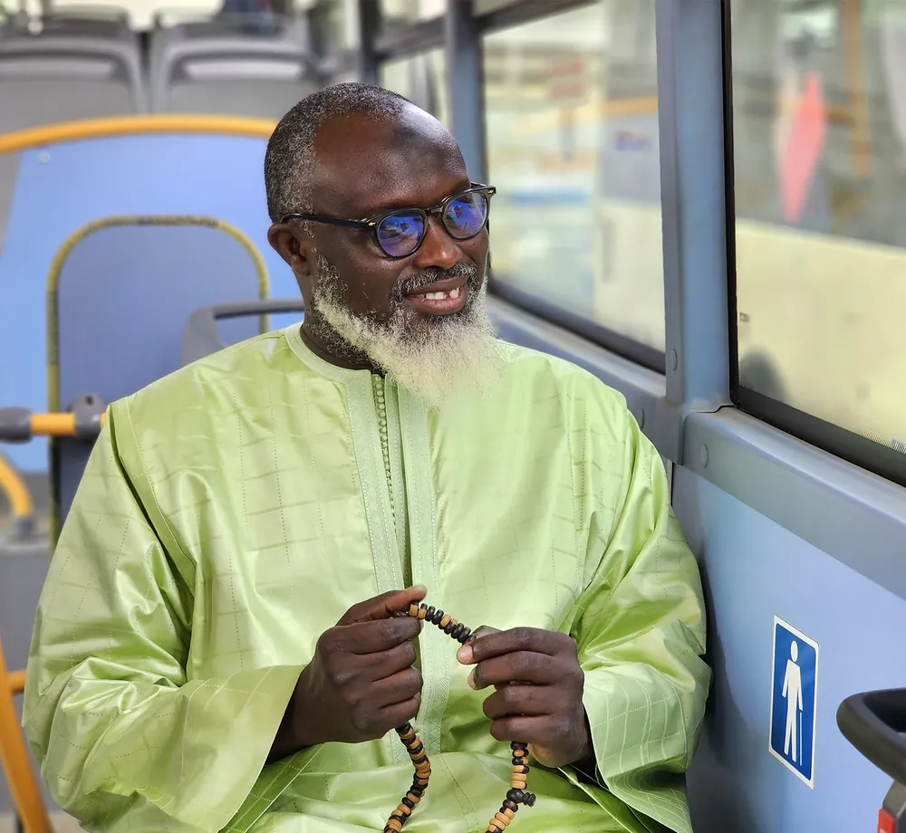
Présentation
Les habitudes de mobilité évoluent. Dem Dikk s'engage à opérer des services qui répondent aux besoins de tous les citoyens, dans le respect de l'équité, du professionnalisme et de l'innovation.
Un service public de transport moderne, adapté aux exigences actuelles et futures.
Transporter les personnes et les biens partout au Sénégal et dans la sous-région, en sécurité.
Un système global de transport performant au Sénégal et en Afrique de l'Ouest.
Création de Dakar Dem Dikk, après la Sotrac.
Démarrage des activités à Dakar et en banlieue.
Arrivée de 475 bus Ashok Leyland et de nouvelles lignes urbaines.
Lancement de Sénégal Dem Dikk vers les villes de l'intérieur.
Dem Dikk au cœur du transport des JOJ Dakar 2026.
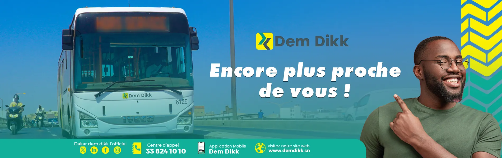
Conducteurs, mécaniciens, agents commerciaux, ingénieurs : envoyez votre candidature spontanée. Les offres publiées apparaîtront ici.
Service clientèle